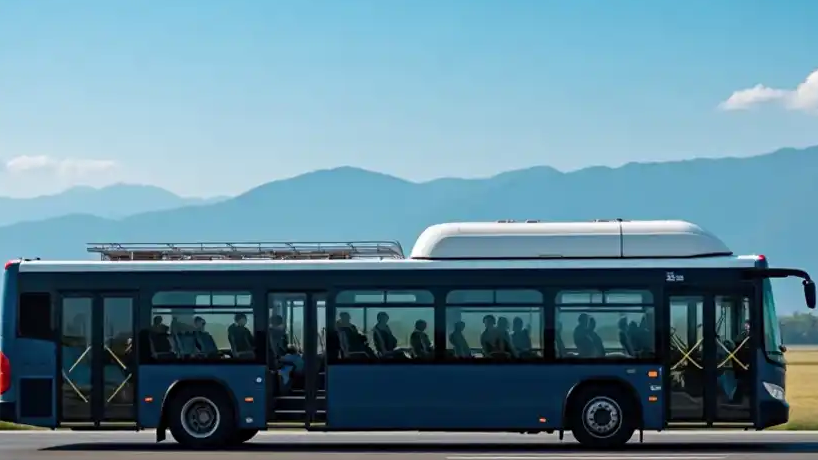

据多家媒体报道，在高铁网络密布、私家车普及的冲击下，公路客运曾经历断崖式下滑，大量客运站关停、班线缩减。但近一段时间，部分城际与城乡线路出现回暖迹象：定制客运、点对点班车、景区直通车等新模式，让大巴重新找到了生存缝隙。
报道提到，一些线路的车型升级为更舒适的大容量客车（如约1200座级运力调度），配合"上门接、送到点"的灵活服务，重新俘获了对价格敏感、又不愿多次中转的旅客。
从"没人坐"到"又有人坐"，大巴的回归，是一场关于"性价比"的复活。
所以回暖的关键不是大巴变快了，而是它重新找到了高铁替代不了的那些需求。
表层看，是价格战；但更深一层，是出行需求的"分层"。高铁快，但站点往往在城市边缘、票价更高、且只覆盖干线；而大巴能进县城、到乡镇、上门接客，覆盖的是"最后一公里"和"价格敏感人群"。
第二个原因是模式进化。传统"站到站"被定制客运取代后，大巴从"公共交通工具"变成"门到门服务"，体验大幅提升。再加上景区直通车、夜间班次等差异化供给，正好填补了高铁与私家车之间的空白。
还有一点现实：不是每个目的地都有高铁，也不是每次出行都值得为速度多花钱。当"省一点"重新变得重要，大巴的价值就回来了。
高铁赢在速度，大巴活下来靠的是贴地飞行的灵活与便宜。
从交通行业视角看，公路客运的出路不在"复辟旧模式"，而在"升级新形态"：数字化调度、定制班线、与高铁接驳、文旅融合（如"车票+门票"套餐），都是已被验证的方向。关停的客运站若转型为综合换乘与物流节点，也能重获生命力。
对旅客而言，多一种选择从来是好事——高铁管速度，大巴管灵活，自驾管自由，三者互补而非你死我活。
对中小城市与县域，大巴回暖更具意义：它关乎的是"不被交通网络遗忘"的底线公平。一条班线，可能就是一个乡镇连接外界的动脉。
大巴的回归提醒我们：交通的优劣，不在于谁最快，而在于有没有覆盖到每一个人。
回到那条城际线路：一辆大巴驶出站台，载着赶集的老人、探亲的年轻人、去县城看病的家庭——它慢，但刚好开到他们家门口。
城际大巴的回暖，不是怀旧，而是市场用脚投票：总有人需要便宜、灵活、能到门口的车。高铁飞驰的时代，也请给慢一点的车留一条路。因为交通的温度，恰恰藏在那些"不够快"的班次里。